Los mejores restaurantes de Barranquilla
Cuando salimos a comer, no lo hacemos porque tengamos que hacerlo, lo hacemos porque queremos. Porque los restaurantes nos hacen la vida más interesante. Rompen la monotonía, nos enseñan, nos unen y nos hacen felices. Visitar un lugar y comer en sus restaurantes nos enseña mucho sobre su cultura, su gente y las cosas que le importan a la gente. A continuación, una selección de nuestros lugares favoritos para comer delicioso y disfrutar de un buen ambiente en la ciudad de Barranquilla.
Mistura
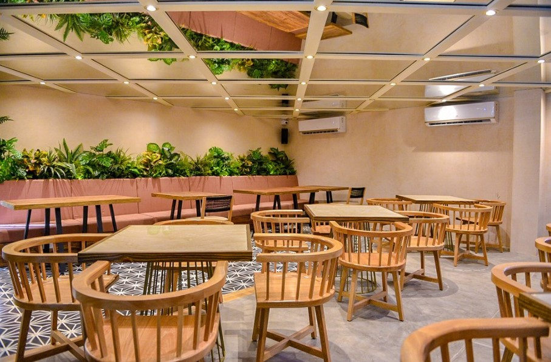Reseña
Mistura es una de las mejores opciones si te encuentras en el barrio el Prado, es un restaurante ideal para pasar una buena tarde de amigos y disfrutar del ambiente por la noche con la música en vivo. Puede encontrarse en el primer piso una relajante terraza, un salón de eventos en el segundo piso y un bar en la tercera planta para compartir de un buen cóctel y una buena compañía en las noches. Su decoración moderna y la versatilidad de sus espacios lo convierten en un gran punto de referencia para la celebración de cualquier evento social. La especialidad de la casa es la comida fusión, incursionando en sabores característicos de Japón y del Perú que se acompañan muy bien con los distintos vinos y cocteles que ofrecen a los comensales. Por último, pero no menos importante, ofrecen cada cierto tanto la oportunidad de experimentar una cata de vino “a ciegas” junto a un sommelier, en un evento que recibe el mismo nombre y que suele ser muy aclamado por los amantes del buen vino y de las experiencias arriesgadas.
Nuestros recomendados
ARROZ CHAUFA - 55K
Arroz salteado al estilo oriental, aceite de sésamo, pimientos, cebolla china, jengibre, tortilla de huevo y champiñones, dorado con salsa de ostras y soya.
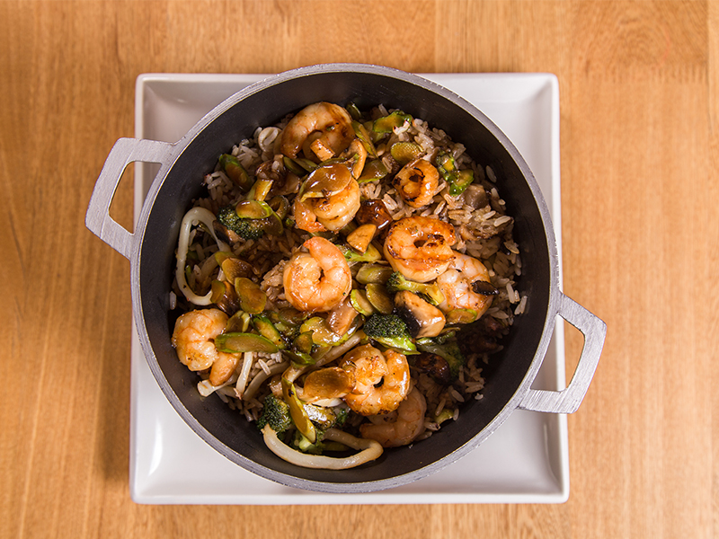LOMO SALTADO - 51K
Solomito en julianas salteado con cebolla, tomate y cilantro en salsa demiglase, servido sobre papas a la francesa y acompañado con arroz Gohan.
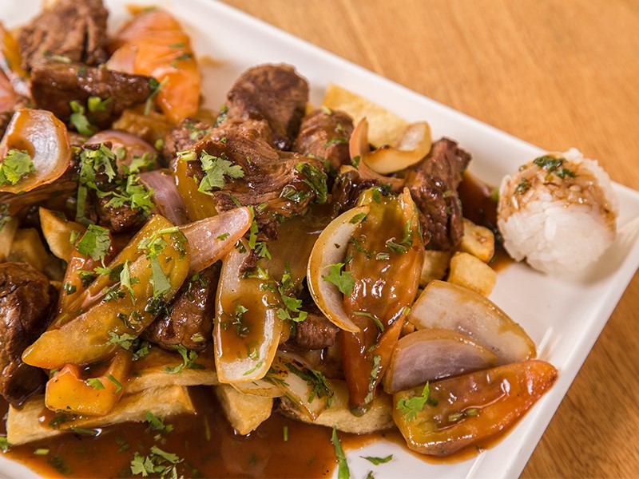SOLOMITO MALIBU - 63K
2 Medallones de solomito, sobre arroz dulce cremoso a base de coco, bañados con camarones en salsa malibu.
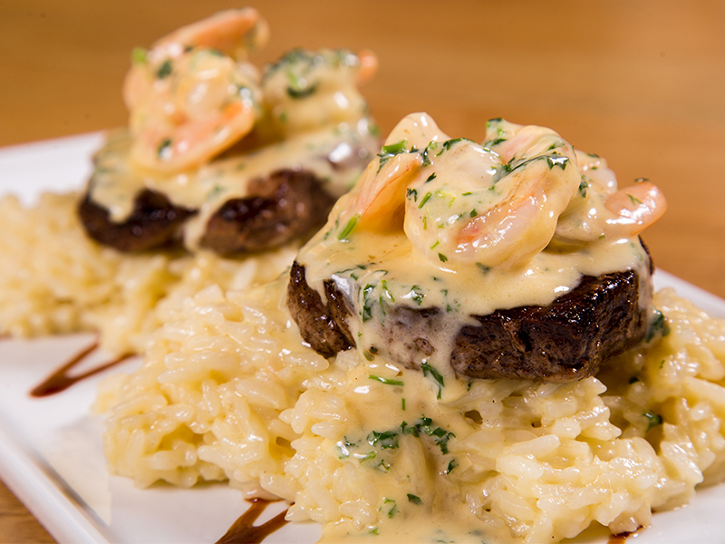Contacto
Ubicación: Cra. 52 #76-126, Barranquilla, Atlántico, Colombia
Información de contacto: Teléfono: +57 5 3374304 - reservas@misturarestaurante.com
Sabina
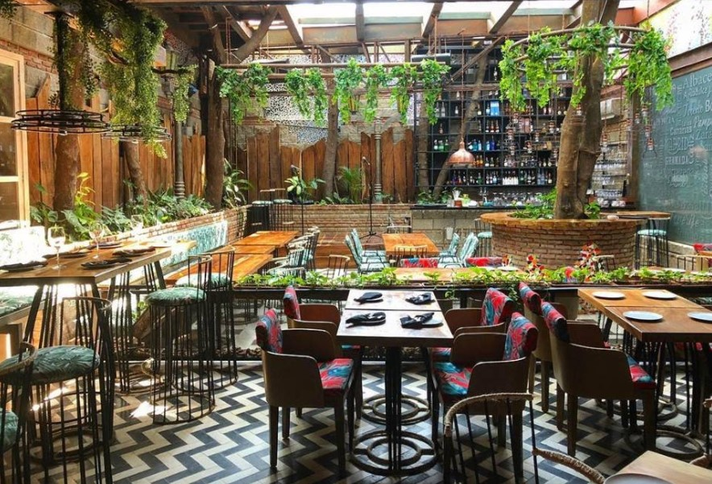Reseña
Sabina Restaurante es un espacio lleno de encanto y comodidad para disfrutar lo mejor de la gastronomía tradicional española. Representa un sueño para su propietario Carlos Guerra, Cónsul de España, quien lo inauguró hace 10 años, en la ciudad de Barranquilla. Su interés en representar la expresión cultural de su natal España, lo motivó a abrir las puertas de este restaurant, que bautizó con el apellido de un famoso artista, Joaquín Sabina. En su propuesta gastronómica se encuentran irresistibles preparaciones, tomadas de las recetas originales familiares, en las que resaltan los sabores de todas las regiones de la Madre Patria. En su carta sobresalen siete exquisitos tipos de paella. De la especialidad en carnes destacan el irresistible Chuletón Sabina, servido en una piedra caliente y acompañado de papas rusticas, garbanzo y espinacas. El famoso Cochinillo de Segovia, muy solicitado por su crujiente porción cocida en sus jugos y acompañado de papas rostizadas y espárragos al grill. Como todo restaurante español, la oferta vinícola no puede faltar. A través de sus vinos tintos, blancos, rosados y espumosos se puede conseguir una rica sensación de matices que brindarán una experiencia sensorial única.
Nuestros recomendados
PAELLA VALENCIANA - 53K
Paella tradicional de carnes mixtas. Pollo, cerdo y mariscos.
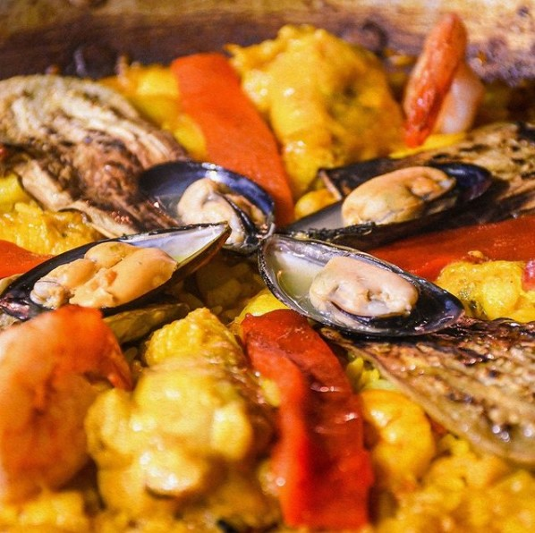CHULETÓN SABINA - 69K
Servido en una piedra caliente y acompañado de papas rusticas, garbanzo y espinacas.
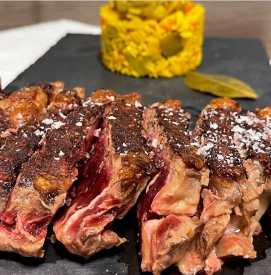LANGOSTINOS AL AJILLO - 77K
Al estilo tradicional, en aceite de oliva, ajo, mantequilla y perejil. Servidos con papa dorada.
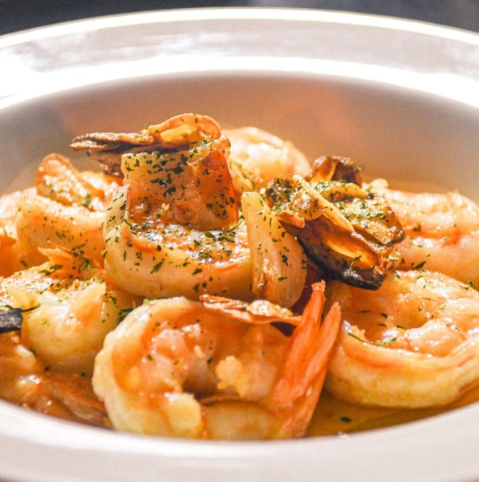Contacto
Ubicación: Cra. 52 # 76-188 Local 3 Casa Quinta, Barranquilla, Atlántico
Información de contacto: Teléfono: (5) 3604757
Porthos Steakhouse & Pub
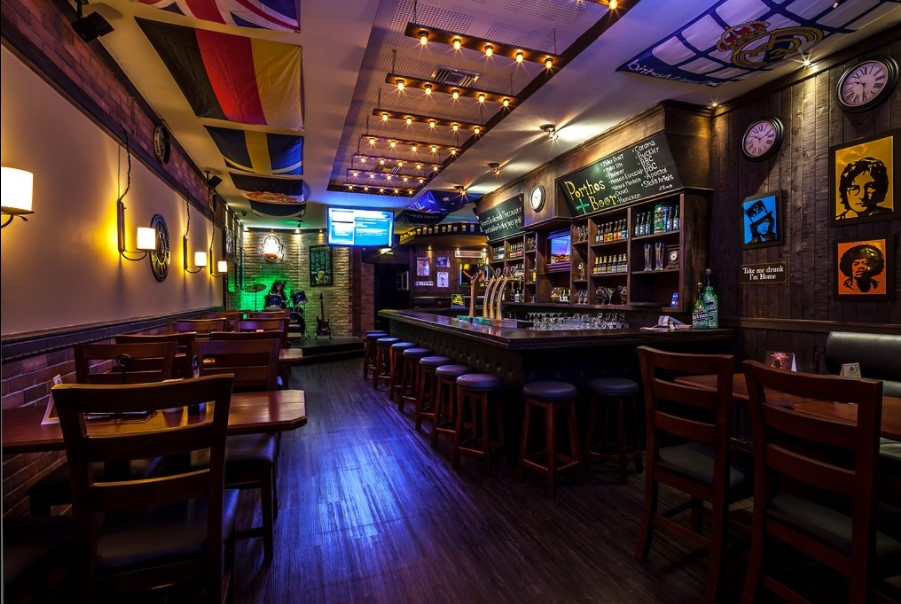Reseña
Porthos es un gastropub con un fuerte enfoque en carnes, hamburguesas y cervezas, con un ambiente semirústico, cálido y agradable. Con un ambiente cálido y agradable que invita a quedarse, para aquellos amantes de la buena comida y la buena cerveza, un espacio ideal para escuchar pop, rock, indie y música en vivo.
Nuestros recomendados
COCHINITA PIBIL - 30K
Una preparación de cushion de cerdo, marinado en cocción lenta por varias horas y desmenuzado en su salsa, acompañado con trozos de piña a la parrilla y arroz parbolizado.
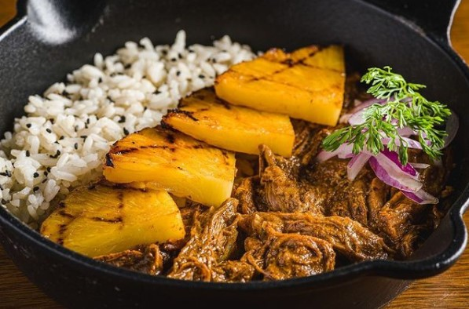BBQ RIBS - 40K
Tiernas costillas de cerdo marinadas en cocción lenta, ahumadas con madera por 12 horas y bañadas en salsa BBQ artesanal.
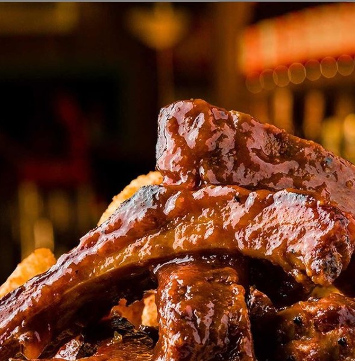CHATEAUBRIAND - 65K
Jugosos medallones de res, bañados en exquisita mantequilla cítrica de perejil.

Contacto
Ubicación: cra 53 No 85 - 61 Centro Comercial Parque Washington 2do Piso, Barranquilla, Colombia.
Información de contacto: Teléfono: (5) 3117654